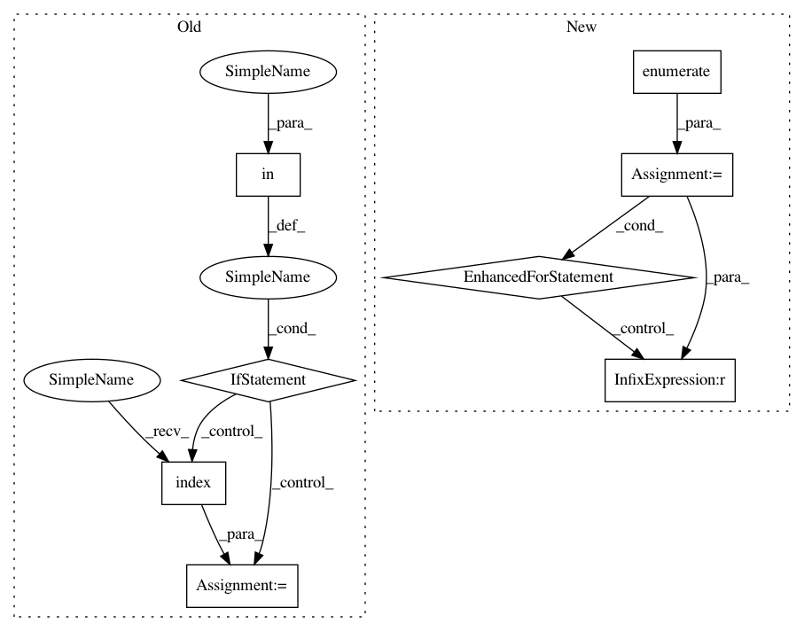

37eac0fbe208a5c659580101d55c62ef76b79123,nltk/sentiment/vader.py,,negated,#Any#Any#,87
Before Change
for word in input_words:
if "n"t" in word:
return True
if "least" in input_words:
i = input_words.index("least")
if i > 0 and input_words[i-1] != "at":
return True
return False
def normalize(score, alpha=15):
After Change
for word in input_words:
if "n"t" in word.lower():
return True
for i, word in enumerate(input_words):
if i > 0 and word.lower() == "least" and input_words[i-1].lower() != "at":
return True
return False
def normalize(score, alpha=15):
In pattern: SUPERPATTERN
Frequency: 3
Non-data size: 8
Instances
Project Name: nltk/nltk
Commit Name: 37eac0fbe208a5c659580101d55c62ef76b79123
Time: 2017-05-29
Author: pnlbagan@gmail.com
File Name: nltk/sentiment/vader.py
Class Name:
Method Name: negated
Project Name: nltk/nltk
Commit Name: 0f36f4aae8fbdd387a34a88d5e270716d987559e
Time: 2019-09-02
Author: alvations@gmail.com
File Name: nltk/sentiment/vader.py
Class Name: SentimentIntensityAnalyzer
Method Name: _in_spite_of_check
Project Name: nltk/nltk
Commit Name: 0f36f4aae8fbdd387a34a88d5e270716d987559e
Time: 2019-09-02
Author: alvations@gmail.com
File Name: nltk/sentiment/vader.py
Class Name: SentimentIntensityAnalyzer
Method Name: _only_if_check